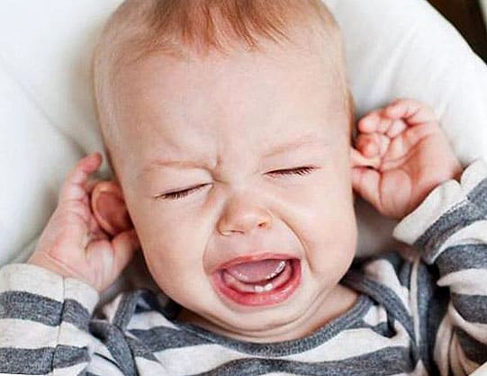
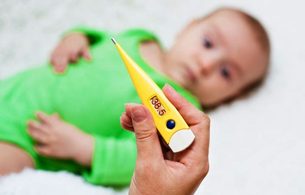

Без сомнения, простуда у детей, или острая респираторная вирусная инфекция (ОРВИ), является самой частой причиной обращения родителей с ребенком к педиатру. Ирония заключается в том, что именно при ОРВИ педиатру совершенно нечего вам предложить, кроме правильного ухода за ребенком.
Противовирусных препаратов или других лекарств, сокращающих продолжительность этой болезни или хотя бы снижающих риск осложнений от нее, нет. В продаже на российском рынке, в назначениях многих педиатров и даже в национальных клинических руководствах вы найдете массу препаратов, обладающих якобы противовирусной, иммуномодулирующей и осложнения-прогоняющей активностью. К сожалению, эффективность этих препаратов не доказана, и они не применяются почти нигде, кроме стран СНГ.
Современные международные руководства для врачей называют ОРВИ «само-проходящей болезнью» и советуют только облегчать самочувствие ребенка и следить за осложнениями, с которыми следует своевременно обращаться к врачу.
1) Если ребенок проснулся ночью от боли в ухе, дайте ему жаропонижающее (Нурофен, Калпол и т. д.).

Это снимет боль, и ребенок сможет спокойно поспать до утра. И вся семья сможет.
Это же так просто: болит ухо – обезбольте. Почему так много людей не догадываются об этом и позволяют ребенку страдать от боли до утра? Что вы сделаете, если проснетесь ночью от зубной боли? Примете ибупрофен или аспирин: снимете боль, проспите до утра, а уже утром попробуете записаться к стоматологу или еще как-то решить проблему, верно? Ребенок тоже этого заслуживает! Только помните, что многие препараты запрещены для детей (особенно аспирин!), но разрешенные – ибупрофен и парацетамол (содержатся в лекарствах Нурофен, Калпол и др.) – очень неплохо снимают боль.
Из правила «болит – обезболь» есть только одно исключение – боль в животе. Вот боль в животе не следует снимать до осмотра врачом, потому что вы можете замаскировать «острый живот» (патологию, требующую срочной хирургической операции, – аппендицит, инвагинацию кишечника и др.), потерять время и резко ухудшить состояние и прогноз ребенка. При легкой боли в животе ребенка нужно наблюдать без обезболивания, при средней и сильной необходимо показать врачу (в тяжелых и срочных случаях немедленно вызвать скорую или самостоятельно отвезти в приемное отделение детского хирургического стационара).
Как быть с малышами, которые проснулись от боли, но пока неясно, что болит, может, и живот? Отвлечь ненадолго, и сначала мягко, а потом все глубже помять живот и следить за гримасой боли на лице. Есть подозрение на боль в животе – вызывайте скорую, нет, живот спокойный – дайте Нурофен, успокойте малыша и укладывайте спать.
2) Жар у ребенка сам по себе – не повод для паники!

Сколько про это ни говори, родители все равно паникуют. Температура при ОРВИ должна повышаться, это нормально. Ни 39, ни 40 градусов сами по себе не должны вас сильно пугать. Опасной для мозга является лишь лихорадка более 41–42 градусов (при ней начинается разрушение некоторых важных белков), лихорадка до 41 лишь ухудшает самочувствие, но не угрожает напрямую жизни и здоровью ребенка.
Нет универсальной цифры на термометре, до достижения которой лихорадку не следует снижать. Правильнее ориентироваться на самочувствие малыша: если у него 39,3, но его уже бросило в жар и пот, можно и не давать жаропонижающее, температура снизится сама. Если 37,2, но его сильно колотит ознобом, не ждите никаких условных цифр, дайте препарат.
Помните, что нет цели сбить температуру до 36,6: было 40,3, стало 38,9, но ребенок ожил, ему полегчало – это хороший признак и достаточный эффект. Подробнее об адекватной тактике при лихорадке см. в главе 2.
3) Если больной ОРВИ ребенок после снижения лихорадки начинает бегать, играть и шалить, будто он здоровый, – это добрый знак.
Если же вы снизили температуру до приемлемой, а он все равно день напролет лежит слабый и вялый, то обратитесь к педиатру поскорее, сегодня-завтра.
4) Если ребенок почти ничего не ест при лихорадке и даже похудел за несколько дней болезни, это не страшно.
Наверстает упущенное как только поправится. Главное, чтобы он не прекращал пить.
Рвота и разжижение стула при лихорадке тоже частое явление. Если ребенка вырвало пару раз, или было 2–3 эпизода диареи – не страшно, но если чаще, и начали появляться признаки обезвоживания – тогда пора интенсивно отпаивать (как при гастроэнтерите) или вводить внутривенные солевые растворы, строго по назначению врача.
5) Поите больного ребенка!
Дети с ОРВИ до 2 лет жизни должны выпивать в сутки не менее 1 литра жидкости, дети старше 2 лет – 1,5–2 литра. Лихорадка приводит к значительным потерям жидкости, ваша задача – восполнять эти потери. Пить можно любую пищевую жидкость, оптимально – компоты, чаи, морсы, соки, молочные коктейли и т. д. Если ребенок лучше пьет прохладные жидкости – поите прохладными, это не повредит. Частое прикладывание к груди (если ребенок на грудном вскармливании) – полный эквивалент обильного питья, это можно и нужно делать, даже если у самой мамы ОРВИ и жар.
6) Не надо вызывать скорую чтобы сбить лихорадку, кроме исключительных случаев.
Не надо вызывать участкового педиатра домой, если у ребенка нет высокой температуры, рвоты или других симптомов, приковывающих ребенка к постели. Российские родители напрочь избалованы бесплатной медициной, это нельзя не признать. Родители вызывают скорую по 4 раза за ночь и еще бранятся в стиле «вы обязаны», педиатра на дом «на простые сопли» и врут регистратору в телефон, что у ребенка лихорадка (иначе вызов не примут), только чтобы не идти в поликлинику самим, и потом еще умудряются хвастливо рассказывать мне об этом на приеме. Цените время и труд медицинских работников.
7) Сейчас совсем крамольную вещь скажу: нет смысла показывать ребенка педиатру в первые день-два лихорадки, если она не сопровождается опасными симптомами – многократной рвотой, сыпью, тяжелой головной болью, одышкой, болью в ухе и др.
Гораздо логичнее обратиться к врачу на 3-4-й день, потому что в первые дни еще не ясно, по какому пути потечет болезнь (ангина, трахеит, отит…), и хороший педиатр все равно назначит только симптоматическое лечение и повторный визит через пару дней. Лечение всех ОРВИ в первые дни одинаковое: только обильное питье и снижение лихорадки. Если у ребенка потекли сопли, появился кашель и лихорадка, сразу обращаться к врачу надо, только если вам нужен лист нетрудоспособности (больничный).
8) Гулять и мыть больного ребенка МОЖНО!
Ни одна болезнь не лечится грязью, скукой и духотой. Не надо гулять и мыть, только если самому ребенку некомфортно в ванне или на улице (обычно только при ознобе от лихорадки). Вы ничем не навредите, развеявшись от домашнего заточения и погуляв с ребенком часок между пиками лихорадки или ополоснув его в то время, когда его не знобит. Боязнь мытья и прогулок у родителей доходит до нелепого: однажды, например, ко мне пришла девочка в летней шапочке, а ее мама пояснила, что девочка вылила себе на голову суп из тарелки, и мама дала ему высохнуть и замаскировала шапкой, потому что «ну мыть же нельзя».
9) Бред (галлюцинации на пике лихорадки) у малыша может сильно пугать родителей, но это совершенно безопасный симптом.
Объясните ребенку, что это такой сон наяву, это все ненастоящее, он пройдет вместе с температурой; успокойте его, поспите рядом с ним.
10) Фебрильные судороги – очень пугающая вещь.
Но они НЕ связаны с эпилепсией, всегда имеют хороший прогноз и почти не связаны с тяжестью лихорадки (вполне могут повториться и при 37,3), поэтому пичкать дитя огромными дозами жаропонижающих, стараясь не пускать выше 38° бессмысленно и вредно.
11) Навязло в зубах, но повторим еще раз: антибиотики НЕ имеют отношения к лечению ОРВИ.
Нет фиксированного количества дней лихорадки, которые сами по себе говорят о необходимости начать прием антибиотика (подробнее см. главу 9). Антибиотик необходим в случае возникновения некоторых осложнений ОРВИ, например иногда при среднем отите (см. главу 3), почти всегда при пневмонии и т. д. Антибиотик необходим, если это изначально было не ОРВИ (при пиелонефрите и др.). Но аргумент «я больше не могла терпеть и дала антибиотик» – это признак инфантильности родителя, простите. Если у вас чрезмерная тревожность, то таблетки надо пить вам, а не ребенку. Антибиотик вовсе не «последнее средство»; если для него нет точки приложения (если он не показан), то он не ускорит выздоровление от ОРВИ, только добавит побочных эффектов (диарею, например) и кинет камушек во вселенскую копилку антибиотикорезистентности микробов.
Если ваш врач советует начать антибиотик только потому, что у ребенка лихорадка третий (ну или пятый) день, то вам следует получить мнение другого врача.
12) Вторая волна лихорадки всегда подозрительна в плане осложнений.
Обычная ОРВИ лихорадит 1–5 суток, затем ребенок быстро идет на поправку. Но если лихорадка уже стихла, прошло пара дней, и снова начался подъем температуры выше 38, то это веский повод показать ребенка врачу.
Только не путайте вторую волну лихорадки с остаточным субфебрилитетом; после перенесенной ОРВИ иногда температура держится около 37,5 (субфебрилитет) не-делю-две, весь день или только под вечер. Это совсем не заслуживает вашего внимания и тревоги. Я советую в таких ситуациях просто перестать измерять температуру и успокоиться.
13) Часто болеть ОРВИ маленькому ребенку – нормально, это не симптом сниженного иммунитета и не повод для паники.
В русском языке даже слово есть такое – «сопляк»; помните, что оно означает? Правильно, маленького ребенка. Сама этимология слова толсто намекает нам, что во все времена дети всегда росли с «соплями до нижней губы», это их нормальное состояние.
Посещать детский сад и часто болеть ОРВИ – нормально. Вспомните себя, когда вы долгое время не посещали тренажерный зал, а потом вдруг решили крепко потренироваться; у вас все болит, это называется крепатура. Чувствуете ли вы себя здоровыми? Разумеется, нет. Но идете ли вы к врачу с ужасными предчувствиями, думая о самом плохом? Тоже нет, это пройдет само. А вот если вы начали тренироваться и на легкой нагрузке сломали руку – вот это повод для серьезного обследования.
Если ребенок не просто часто болеет ОРВИ, но после них постоянно осложняется отитами (больше восьми в год), пневмониями (больше двух в год) и т. д., это тоже повод для серьезного обследования.
Точно так же не следует волноваться из-за частых ОРВИ и других инфекций в детском саду. Пока они не ведут к регулярным и/или тяжелым осложнениям (отитам, пневмониям, рецидивирующему фурункулезу и т. д.), это норма. У нас в организме все можно тренировать: можно заниматься спортом и тренировать мышцы, можно работать врачом и тренировать память, можно ходить в детский сад и тренировать иммунитет. Со временем иммунитет научится справляться с новыми инфекциями на самых ранних стадиях, и ребенок станет болеть гораздо реже.
14) Нет, вообще нет, от слова «совсем», препаратов, которые позволят ребенку реже и легче болеть ОРВИ.
Ни бесчисленные иммуномодуляторы, ни витамины, ни оксолиновая мазь, ни гриппферон, ни амулет из чеснока на шее, ни кварцевая лампа в детской комнате, ни чудо-йогурт с пробиотиками и т. д., и т. п., НИЧЕГО не работает в этом направлении, это просто маркетинг или мифы, не верьте рекламе! Все, что вы можете сделать для защиты своего ребенка от ОРВИ, это ежегодно прививать его против гриппа, приучить навыкам базовой гигиены, бороться с привычкой трогать лицо руками и избегать посещения людных мест во время эпидемии.
Я прекрасно понимаю, что часто болеющий ребенок доставляет много хлопот родителям на работе (постоянные больничные не понравятся ни одному работодателю) и приносит много тревог в семью (особенно бабушкам, да). Говоря, что часто болеть в саду – это нормально, я не имею в виду, что вы должны этому радоваться. Я просто пытаюсь объяснить, что это не приводит к серьезным медицинским последствиям, не исправляется лекарствами и больше лежит в плоскости бытовых проблем, чем медицинских.
Справочник UpToDate так пишет о частых ОРВИ у детей
«Дети до шести лет в среднем переносят от шести до восьми ОРВИ в год (вплоть до ежемесячных эпизодов ОРВИ в период с сентября по апрель), продолжительность каждого эпизода составляет в среднем 14 дней. Это означает, что ребенок может иметь симптомы простуды почти половину дней в этот период времени, без всяких причин для беспокойства родителей или врача. Маленькие дети, посещающие детский сад, судя по всему, страдают от ОРВИ больше, чем дети, воспитывающиеся на дому. Однако при поступлении в начальную школу эта группа детей, напротив, болеет реже «домашних» детей, потому что они уже защищены от большего числа возбудителей ОРВИ».
…Последнее сравнение. Представьте себе, что вы вышли из дома зимой после ледяного дождя. Весь город обледенел, превратился в сплошной каток, и вы пока шли до работы, постоянно поскальзывались и даже раз пять упали. Скажите, по этой причине вы начнете волноваться о своем здоровье? Вы пойдете к неврологу с жалобами на нарушение координации движений и просьбой «Выпишите мне что-нибудь, чтобы больше не падать»? Я думаю, нет – и правильно сделаете, ведь у вашей «атаксии» есть очевидная причина: все кругом обледенело, а когда вы ходите в здании, вы не падаете. Вот так же и с садом: пока ребенок сидел дома и не контактировал со множеством вирусов и бактерий, он почти не болел. Наберитесь терпения, ваш малыш скоро подрастет и перестанет болеть так часто. Это такая же временная и самопроходящая проблема, как, например, младенческие колики.
(Сергей Бутрий "Здоровье ребенка: современный подход")